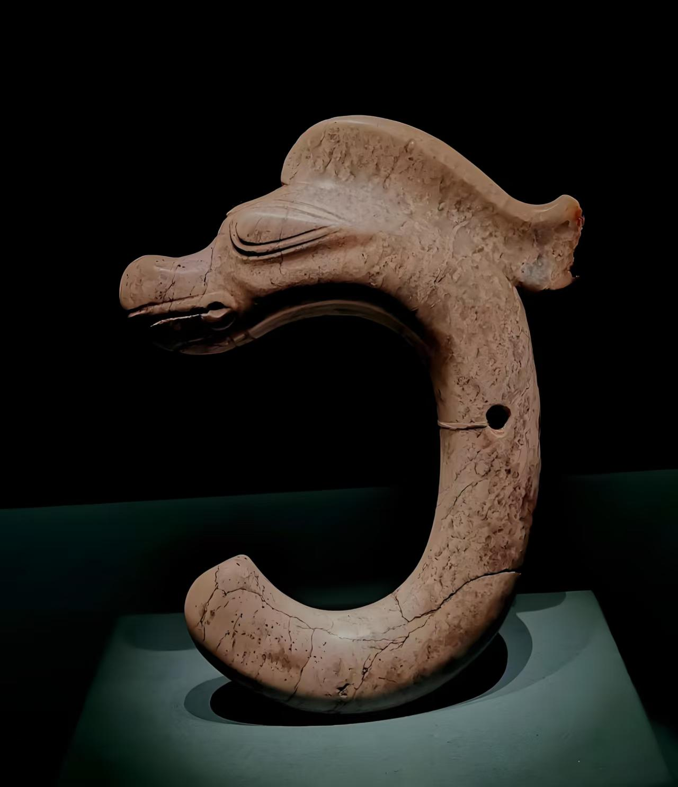
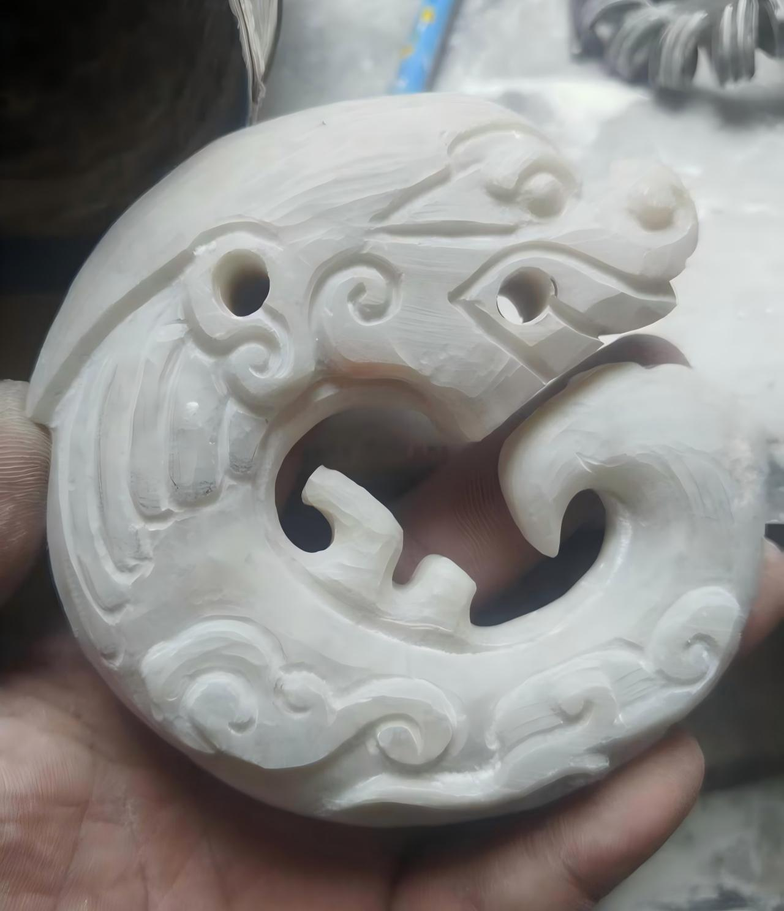
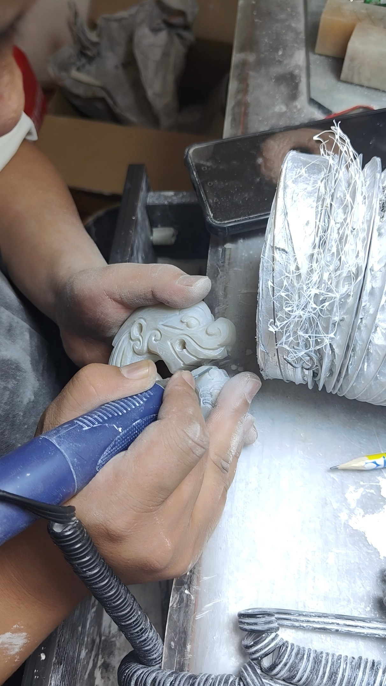
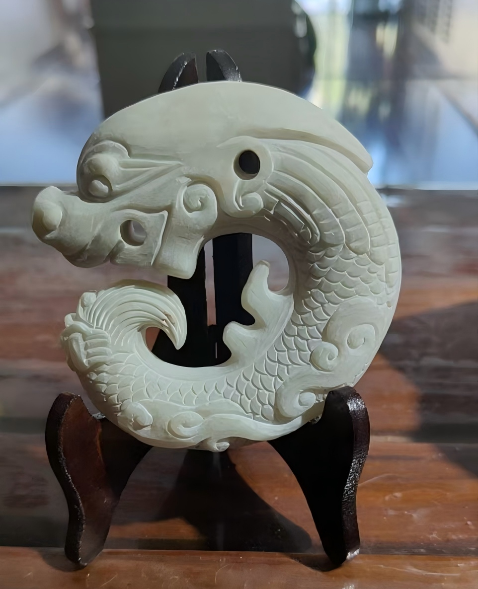
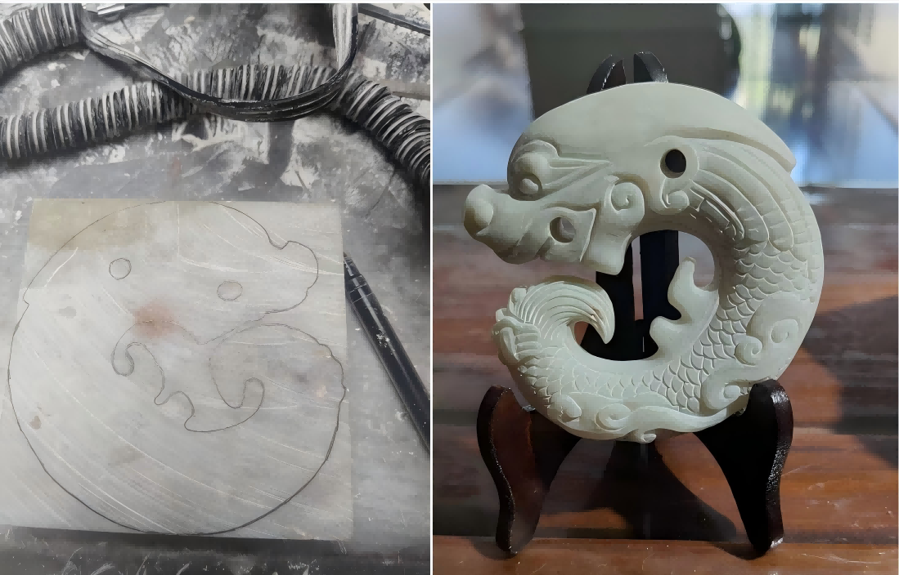

4,700 Years of Silence. One Coil to Speak.


Left: Classic Hongshan C-dragon, jade, 3500 BCE. Right: Loong Heritage B1 "Beardless" edition, Balin stone.
A 4,700-year-old silence, spoken again.
In 1971, a farmer in Inner Mongolia's Hongshan Mountains uncovered a coiled jade creature buried for millennia. That find — the Hongshan C-Dragon — is now hailed as "China's First Dragon": a plump, hooded coil with closed eyes, erect mane, and no limbs, carved from trembling spinach-green nephrite by Neolithic hands 4700–2900 BCE.
For Loong Heritage, the C-dragon is not a souvenir. It is a silhouette worth preserving — but also worth refining.
Why we removed the mane.
The original C-dragon's raised mane and antler-like crest belong to a world of shamans and jade burials. On a contemporary collector's shelf or worn as jewelry, those protrusions read as "costume" rather than "form." So we asked: what if the dragon went on a diet? We shaved the mane, softened the jaw, smoothed the crest — and kept the iconic coil, the ridged spine, the sleeping-cat tension that made the C-dragon revolutionary in the first place.
The B1 ("Beardless C-Dragon") is our answer. Same 4,700-year-old posture. Cleaner lines. No antlers to snag on the present.
How it's made.
The design comes from Loong Heritage (Tianjin) — the "why." The carving stays with Master Song Weifeng, Yanfeng Studio, Chifeng — the "how." Song has 30+ years of expertise with Balin stone, a local Inner Mongolian soapstone often called "Northern jade." One B1 takes 12–18 hours of hand-guided rotary carving and chisel work — no molds, no casts. Each base carries Song's "燕" (Yan) artisan seal + a unique Loong Heritage serial number (e.g., LY-B1-001).
One stone, one dragon. The 4,700-year coil continues.
Unlike mass-produced resin casts, our dragons are carved from a single block of natural Balin stone. Master Song combines traditional cold chisels with hand-controlled rotary tools — every scale and coil guided strictly by eye and hand.

While modern rotary tools assist in material removal, the soul of the work remains manual. Master Song relies on tactile feedback and decades of muscle memory to control the depth and angle of each cut, ensuring the vitality of the dragon's form.

Every finished piece bears the artisan's seal "燕" (Yan) on the base, alongside a unique Loong Heritage serial number. This commitment to traceability guarantees that each sculpture is a unique artwork, never to be replicated.

Left: Raw Balin stone with natural skin. Right: Finished B1 C-Dragon after 18 hours of hand carving.
Email: loongheritage@outlook.com
Tianjin, China | Chifeng, Inner Mongolia
For collaborations, wholesale inquiries, and custom commissions.